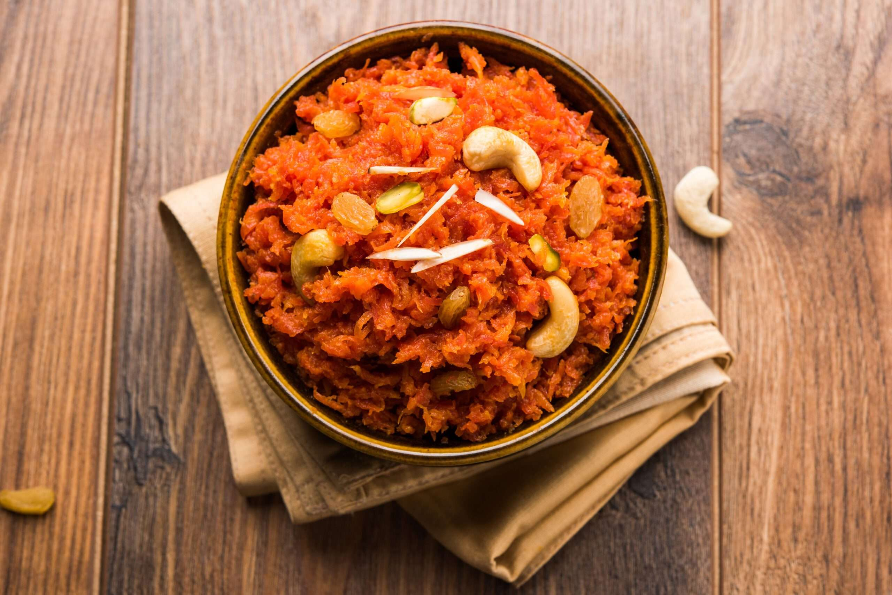

Bajra Roti
A traditional Indian bread made from millet flour, served with ghee and jaggery.

Dal Makhani
A rich and creamy lentil dish cooked with spices, perfect with rice or roti.

Khichdi
A comforting dish made with rice and lentils, often garnished with ghee and spices.

Gajar Ka Halwa
A sweet dessert made from grated carrots, milk, and sugar, garnished with nuts.